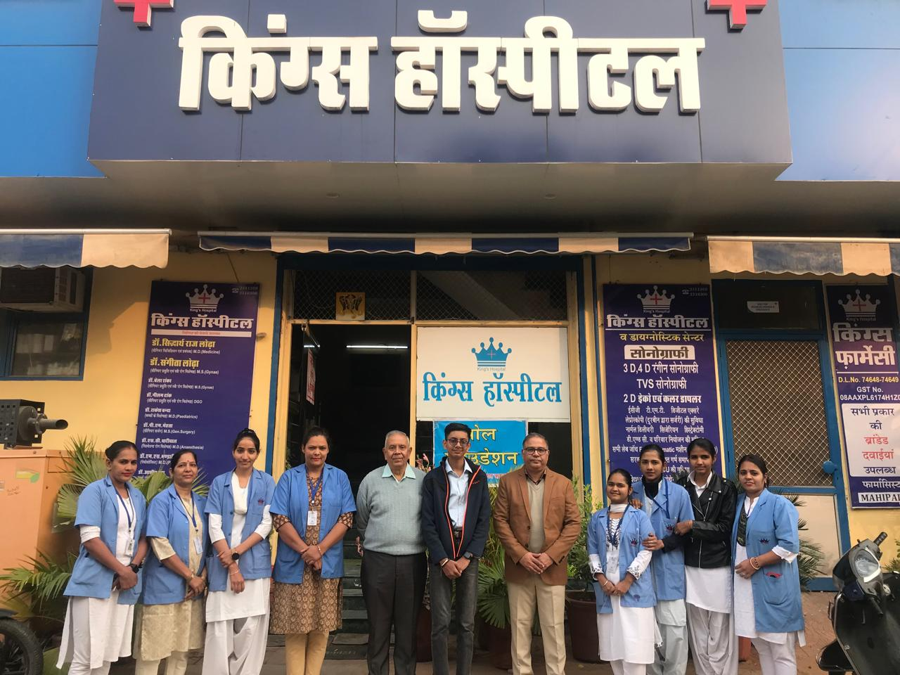
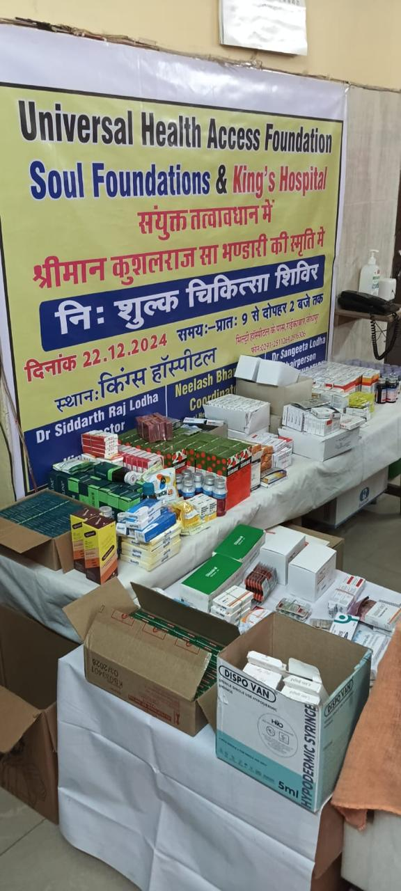
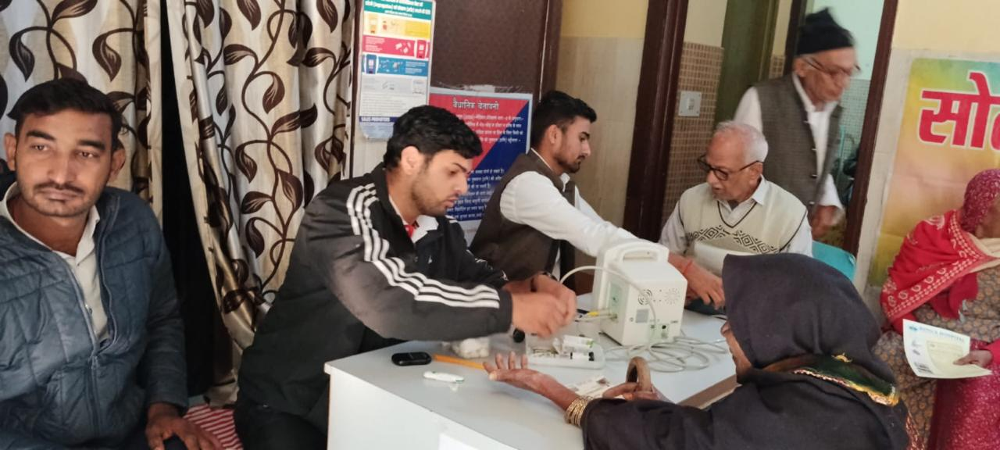
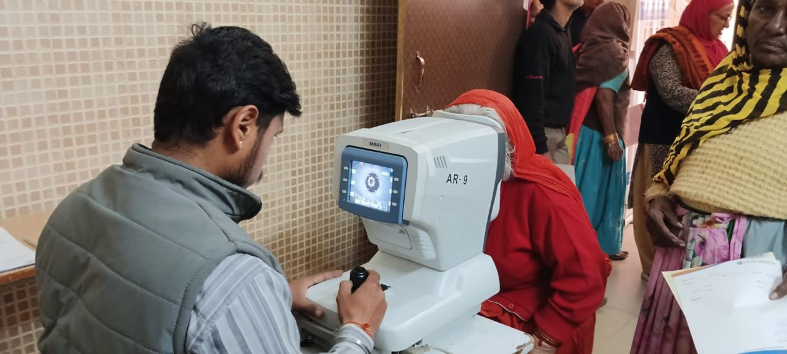
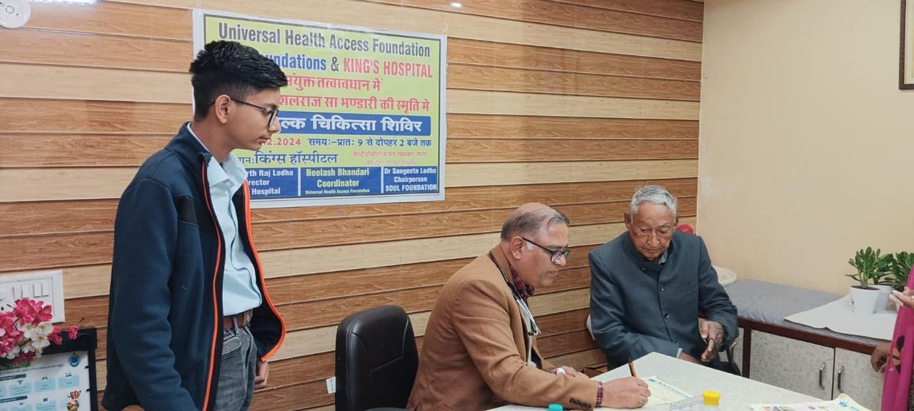
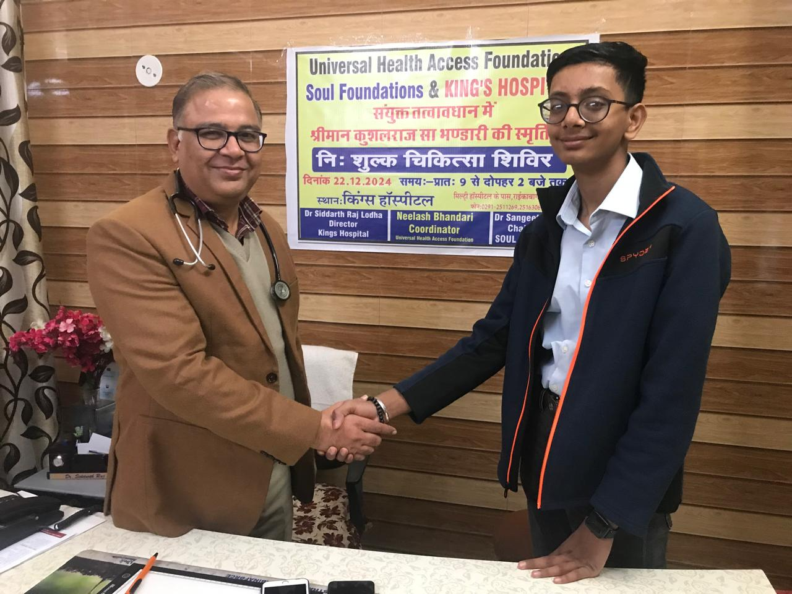
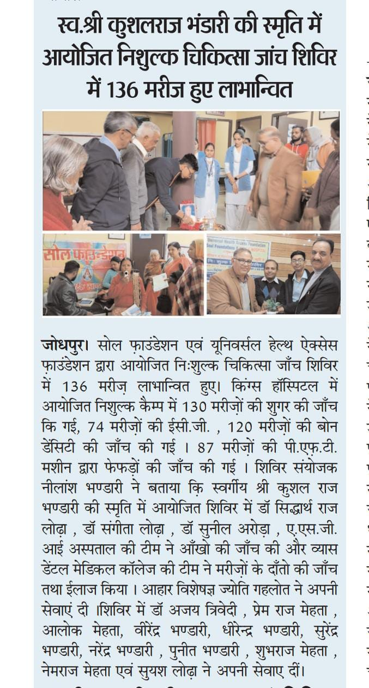

Dec 16, 2024
A medical camp in India's blue heaven - Jodhpur on Dec 22, 2024
Jodhpur, with its iconic blue-painted houses and a legacy rich in culture and history, is a city in Rajasthan, India brimming with life and stories. Yet, like many places, it faces challenges, and one of these which is the most pressing is having access to affordable healthcare. To help address this, I partnered with Dr. Siddharth Lodha and Dr. Sangeeta Lodha from Kings Hospital and Soul Foundation to organize a medical camp on December 22, 2024. The camp aimed to provide checkups, diagnoses, and essential medications, at no cost, and to as many people as possible, ensuring that quality care reached those in need.
The camp was successful, with 136 patients benefiting from the initiative. Over 130 patients were tested for diabetes, 74 underwent ECG tests, 120 had bone density tests, and 87 received lung function tests using PFT machines. The camp brought together an incredible team of medical professionals, including Dr. Sunil Arora, the ASGI Hospital eye care team, and experts from Vyas Dental Medical College, who conducted thorough dental checkups. Dietitian Jyoti Gehlot and Dr. Ajay Trivedi also offered their invaluable services, providing tailored advice and care for patients.
Among the patients was Pankaj Jain, a 49-year-old resident of Jodhpur living with diabetes for two years. The camp gave him access to a comprehensive health check, during which he discovered other underlying issues he hadn't been aware of. The relief on his face was evident as he shared how much the initiative meant to him, allowing him to prioritize his health and use his limited resources to invest in his family's future.
Another inspiring story was that of Dheerendra Singh, a 60-year-old retired army officer working as a bank security guard. With retirement approaching, he aspires of becoming a driver to supplement his income. At the camp, he received a full health checkup, which gave him peace of mind about his condition. Touched by the impact of the camp, Dheerendra offered to assist with transportation arrangements for future camps once his driving business is operational.
This event wouldn't have been possible without the unwavering dedication of the doctors, staff, and volunteers. Their efforts ensured that every patient received compassionate care in a well-coordinated setup.
While this camp in the city of Jodhpur and the preceding one in a remote village near Barmer ran smoothly, they also provided important lessons. I had estimated the cost of running both camps at $900, but was only able to collect $510 in three months of fundraising efforts. Thankfully, the support of Lion's Club, Maheshwari Samaj, Soul Foundation, and other generous contributors covered the deficit and made these initiatives possible. Going forward, I plan to start campaigns sooner and get a broader reach.
Since conducting these 2024 camps, I have received requests to organize similar events in Bikaner, another small city in Rajasthan, and at an old-age center in Banaras, an ancient city in the Indian state of Uttar Pradesh. While these requests are from India, I recognize that similar challenges exist in all parts of the world, especially the developing ones. I will seek volunteers to join UHAF to extend its reach and bring healthcare to underserved regions worldwide. If you are interested, please email me at uhaf.nonprofit@gmail.com.
As we move forward, I'm deeply grateful for everyone who contributed to this mission, and I'm inspired to continue making a difference. Together, we can build healthier, more compassionate communities, one step at a time.








Contact me at uhaf.nonprofit@gmail.com to donate towards future camps.
Universal Health Access Foundation is an official 501(c)(3) nonprofit organization.